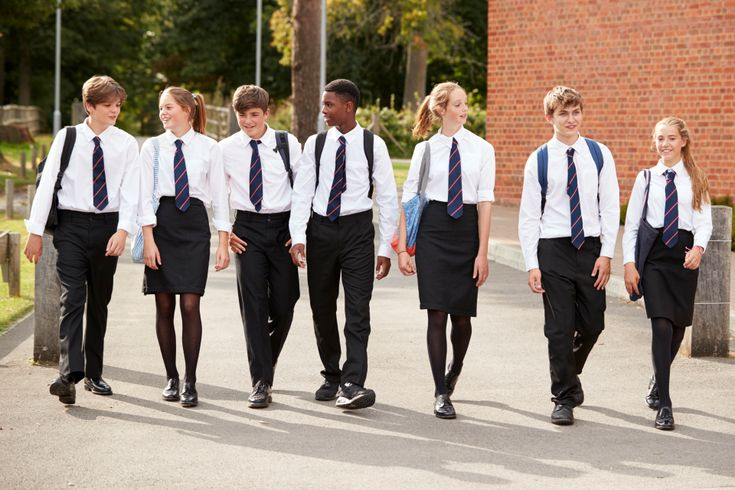

School
The school is required to register its account according to the county in which it is located. In this system, the registration number of the school is assigned by the Ministry, ensuring that each school has its unique registration number. Using this registration number, the school creates an account where they will receive all transfer requests and provide their feedback through the same page.

Student
The student is required to use their government-issued unique registration number to create their account. Additionally, they should provide their basic student information during the account creation process. Within this account, the student can submit transfer requests, which will be sent to their desired school and their county education office. The student will be able to receive feedback from both offices on their page.

Education Office
The education office page belongs to all the offices that are affiliated with the government. The office is required to register its account using a registration number issued by the government to identify the office. This registration number ranges from county educational offices to the national offices. On this page, when a student sends a transfer request, they receive the request and provide feedback accordingly.
Primary School
Since gaining independence, Kenya has undergone transitions across three education curriculums, culminating in the implementation of the Competency-Based Curriculum in 2017, which replaced the longstanding 8-4-4 Curriculum introduced in 1985. Despite concerted efforts to improve basic education, the country grapples with persistently high levels of illiteracy, attributed to factors such as poverty, teenage pregnancy, truancy, and drug abuse, all of which significantly impact the literacy rates of potential students. Notably, in 2017, Kenya's education system received acclaim, earning the top spot among 43 mainland countries in Africa according to the World Economic Forum. However, several challenges persist, including a lack of conducive learning environments for students, with many schools not being the best fit for their needs. Additionally, bureaucratic hurdles and extensive paperwork associated with transferring schools contribute to the difficulties some students face in navigating the current education system.
Secondary School
Most learners in the senior education level are aged 15-17 years old. The class takes up to 3 years, covering grades 10, 11, and 12. In senior school, learners specialize in studies aligned with their areas of interest or talent. Upon completion, they graduate to higher education, such as university, to further their education and enter the workforce. The Ministry of Education is in charge of allocating students from primary to secondary education. Often, students are not given the opportunity to express their opinions on the schools they are assigned to. Usually, allocations are based on student performance, and students are placed throughout the country, even in locations far from their residence. Some students have special needs that must be accommodated by the school, leading to cases where students opt for transfers. However, this process may be time-consuming due to documentation requirements and the distances between the students and the relevant offices.


University and College
University education in Kenya consists of three levels: bachelor's, master's, and doctoral degree programs. Universities also offer diplomas and certificates. Bachelor's degree programs usually include major and minor subjects. Depending on the chosen discipline, a bachelor's program can take 4 to 6 years. The biggest challenge comes at the bachelor's level since, at this stage, students are placed by the ministry. Also, the courses for students are chosen by the ministry from a list of courses provided by the students. In this process, some students are assigned to courses they are not comfortable with, or the university they are assigned to may not be suitable for their needs. There is a need for a smooth transfer of students, which should take the shortest time possible and also be cost-effective.